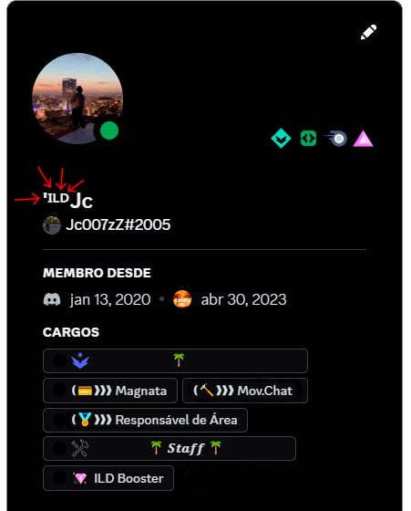
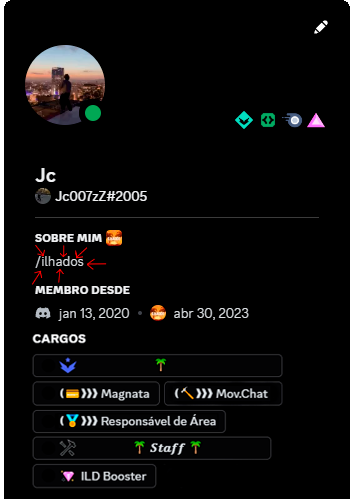

Qual o objetivo da mov chat?
O objetivo da mov chat é deixar o chat geral bem ativo, para atrair e reter os membros
Como funciona?
Você vai agir como um membro comum, mandando mensagens(para cumprir a meta semanal) no geral e conversar e vai obter uma recompensa com isso, o top 1 semanal pode receber vips sonhos entre outros
Como participar?
Primeiramente coloque "ᴵᴸᴰ" no apelido do ilhados voce pode apenas copiar clicando aqui
tambem tem a opção de usar o /ilhados na bio
